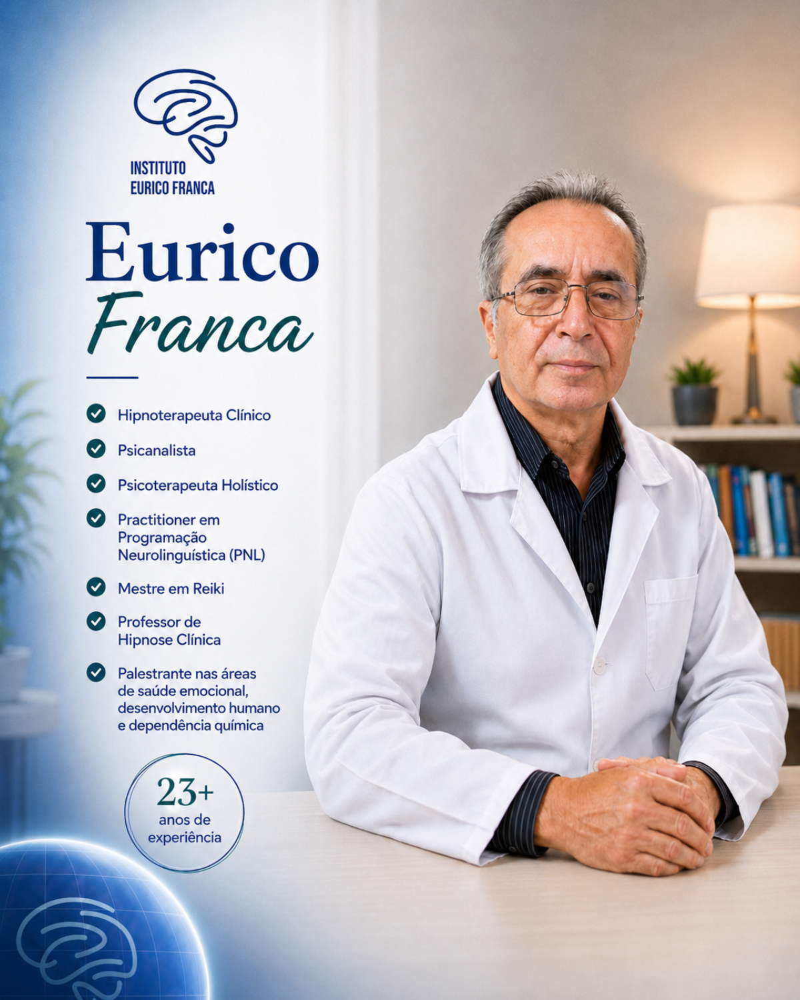

Hipnoterapia e Hipnose Ericksoniana
Abordagem direcionada para trabalhar padrões emocionais, memórias difíceis, bloqueios e respostas automáticas.
No Instituto Eurico Franca, o atendimento une experiência clínica, acolhimento e práticas terapêuticas integrativas para ajudar cada pessoa a compreender melhor seus desafios emocionais e buscar mais equilíbrio na rotina.
Com mais de 23 anos de experiência, o Instituto atua com Hipnoterapia, Psicanálise, Psicoterapia, PNL, Hipnose Ericksoniana e Reiki, sempre com uma condução humanizada, respeitosa e individualizada.
Condução profissional para entender a história, o momento e as necessidades de cada pessoa.
Técnicas terapêuticas combinadas para apoiar clareza emocional, autoconhecimento e bem-estar.
anos
avaliações
Abordagem direcionada para trabalhar padrões emocionais, memórias difíceis, bloqueios e respostas automáticas.
Recursos para ampliar consciência, reorganizar percepções e fortalecer novas formas de lidar com a vida.
Sessões voltadas ao equilíbrio físico e emocional, com acolhimento, presença e respeito ao processo individual.
Algumas situações podem ser trabalhadas em um processo terapêutico individual, sempre considerando a história, os limites e as necessidades de cada pessoa.
Para quem sente a mente acelerada, dificuldade de relaxar e sensação de alerta mesmo em momentos comuns.
Para pessoas que chegam ao fim do dia cansadas, mas não conseguem desacelerar internamente.
Para investigar respostas automáticas que limitam a rotina, decisões e relacionamentos.
Para trabalhar crenças internas, autocrítica excessiva e dificuldade de se posicionar.
Para quem percebe comportamentos que se repetem mesmo quando racionalmente gostaria de agir diferente.
Para compreender emoções, inseguranças e padrões que interferem na forma de se relacionar.
Cada etapa respeita o ritmo do paciente e busca tornar o atendimento mais seguro, humano e compreensível.
O primeiro passo é compreender a história, os gatilhos, o contexto emocional e o que a pessoa deseja trabalhar.
A hipnose pode ser usada como recurso terapêutico para favorecer foco, relaxamento e novas percepções internas.
Etapa terapêuticaApós a sessão, o foco é apoiar novos entendimentos e orientar o paciente para sustentar avanços no cotidiano.

Cuidado emocional com escuta, responsabilidade e respeito pela história de cada pessoa.
O Instituto Eurico Franca atua com hipnoterapia e cuidado emocional, conduzindo o paciente com acolhimento, clareza e responsabilidade.
A proposta é oferecer uma conversa inicial segura para entender a queixa, orientar o melhor caminho e apresentar como o processo pode funcionar para cada caso.
Os vídeos ajudam a entender melhor o processo, esclarecer dúvidas comuns e aproximar quem ainda está buscando orientação.
Conteúdo para explicar o processo e acolher quem ainda tem dúvidas.
Uma conversa sobre sinais emocionais, tensão interna e caminhos de cuidado.
Reflexões para quem deseja compreender melhor emoções, escolhas e comportamentos.
As avaliações reforçam pontos importantes do atendimento: acolhimento, profissionalismo, atenção e cuidado durante o processo terapêutico.
Guia local · avaliação recente
“Ótimo atendimento, excelente profissional. Saí do instituto muito satisfeito com as sessões que fiz de hipnose e apometria. Super indico para as pessoas que têm medo de hipnose como eu também tinha.”
Avaliação no Google
“Atendimento super profissional, qualificado e atencioso. Maravilhoso. Tudo de bom! Super recomendo!”
Avaliação no Google
“Minha experiência tem sido excelente e tem sido um verdadeiro divisor de águas para mim. Desde que conheci o Dr. Eurico, sinto uma melhora enorme no meu bem-estar.”
Não. A hipnoterapia é um estado de foco e relaxamento conduzido de forma terapêutica. O paciente permanece participante do processo.
Não. O atendimento é apresentado de forma responsável, sem prometer cura, prazo fixo ou resultado garantido. Cada caso precisa ser avaliado individualmente.
O WhatsApp permite uma conversa inicial rápida, facilita a orientação do caso e ajuda a entender o melhor próximo passo.
Clique abaixo e envie uma mensagem direta. A conversa inicial ajuda a orientar o melhor caminho com segurança e clareza.
Ao clicar, o WhatsApp será aberto com uma mensagem pronta. Você pode editar antes de enviar.